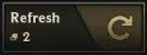
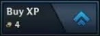

TFT has a bunch of different strategies that are used, with many different playstyles and different compositions that make a strong team.
Two of the main strategies that are often seen are rerolling for 3 stars, or going to level 8-9 and starring up high cost units. These often make up the majority of comps in the game, being simple to play.


One other strategy that is sometimes good is a flexible comp, in which you play less around getting all champions of a given class or origin, and instead play around core units that you get earlier.